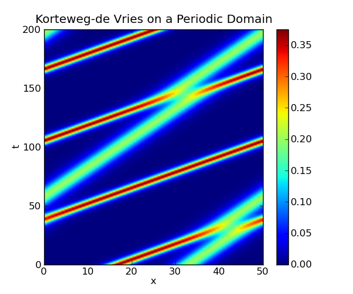

This page shows how the Korteweg-de Vries equation can be solved on a periodic domain using the method of lines, with the spatial derivatives computed using the pseudo-spectral method. In this method, the derivatives are computed in the frequency domain by first applying the FFT to the data, then multiplying by the appropriate values and converting back to the spatial domain with the inverse FFT. This method of differentiation is implemented by the diff function in the module scipy.fftpack.
We discretize the spatial domain, and compute the spatial derivatives using the diff function defined in the scipy.fftpack module. In the following code, this function is given the alias psdiff to avoid confusing it with the numpy function diff. By discretizing only the spatial dimension, we obtain a system of ordinary differential equations, which is implemented in the function kdv(u, t, L). The function kdv_solution(u0, t, L) uses scipy.integrate.odeint to solve this system.
#!python
import numpy as np
from scipy.integrate import odeint
from scipy.fftpack import diff as psdiff
def kdv_exact(x, c):
"""Profile of the exact solution to the KdV for a single soliton on the real
line."""
u = 0.5*c*np.cosh(0.5*np.sqrt(c)*x)**(-2)
return u
def kdv(u, t, L):
"""Differential equations for the KdV equation, discretized in x."""
# Compute the x derivatives using the pseudo-spectral method.
ux = psdiff(u, period=L)
uxxx = psdiff(u, period=L, order=3)
# Compute du/dt.
dudt = -6*u*ux - uxxx
return dudt
def kdv_solution(u0, t, L):
"""Use odeint to solve the KdV equation on a periodic domain.
`u0` is initial condition, `t` is the array of time values at which
the solution is to be computed, and `L` is the length of the periodic
domain."""
sol = odeint(kdv, u0, t, args=(L,), mxstep=5000)
return sol
if __name__ == "__main__":
# Set the size of the domain, and create the discretized grid.
L = 50.0
N = 64
dx = L / (N - 1.0)
x = np.linspace(0, (1-1.0/N)*L, N)
# Set the initial conditions.
# Not exact for two solitons on a periodic domain, but close enough...
u0 = kdv_exact(x-0.33*L, 0.75) + kdv_exact(x-0.65*L, 0.4)
# Set the time sample grid.
T = 200
t = np.linspace(0, T, 501)
print "Computing the solution."
sol = kdv_solution(u0, t, L)
print "Plotting."
import matplotlib.pyplot as plt
plt.figure(figsize=(6,5))
plt.imshow(sol[::-1, :], extent=[0,L,0,T])
plt.colorbar()
plt.xlabel('x')
plt.ylabel('t')
plt.axis('normal')
plt.title('Korteweg-de Vries on a Periodic Domain')
plt.show()
The following plot is created by the above code:
